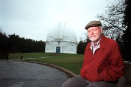

Please note: the AAS Obituaries are temporarily being hosted on this website while their full content is being ingested into the PubPub publishing platform newly adopted by the Bulletin of the American Astronomical Society. When the migration is complete, your existing links will take you to the final, migrated content. Contact peter.williams@aas.org with any questions.
Robert F. Garrison (1936-2017)
Bob Garrison, emeritus professor in the Department of Astronomy and Astrophysics at the University of Toronto, passed away peacefully on 13 August 2017 at Christie Gardens, not too far from the University, with Susanna Jacob, his beloved partner of over 36 years at his side. That ended his fight of 20 years against Parkinson’s disease, which he tackled with characteristic scientific interest and practical strategies, including dancing.
Bob was born on 9 May 1936 to Robert W. and Dorothy I. (Rydquist) Garrison in Aurora, Illinois. He graduated from West Aurora High School, where he met his first wife, Ada V. Mighell, before serving in the US Marine Corps (1954-56). He then attended Earlham College (B.A. 1960 in Math), and was there influenced by Professor Clifford Crump to pursue a career in Astronomy. This led him to studying Physics at the University of Wisconsin (1960-61), and obtaining a Ph.D. in Astronomy at the University of Chicago (1966). It was during the Doctorate that his advisor at Yerkes Observatory, William W. Morgan, inspired him to his life’s work with the MK classification of stars. Bob held a postdoctoral fellowship at the Mount Wilson and Palomar Observatories in 1966-68, before joining the University of Toronto in 1968. There he served as Associate Director of the David Dunlap Observatory and for 28 years traveled to Chile as the Director of the University’s Southern Observatory. Bob was appointed a Professor Emeritus in 2001.
Rudy Schild, a fellow graduate student and a later collaborator, remembers the heavy astrophysical bias at Yerkes under such “greats” as Chandrasekhar, and how Bob absorbed all this theory while becoming attracted to observational astronomy, and particularly the power of spectral classification. Morgan, his advisor, also shared with Bob an unexpected and persistent interest: extragalactic spectra. Bob caught the keenness of Morgan to experiment with equipment and ideas so as to perfect and extend classification schemes, while giving careful attention to the quality of data and to their analysis, based on the fundamentals of firm spectral standards. Thus, Bob became an expert practitioner and ardent promotor of the “MK Process and Stellar Classification,” the title of a conference in 1983 at which both Morgan and Philip Keenan were present, and which proceedings he edited.
As a postdoc in the stimulating environment of Mount Wilson and Palomar Observatories, with excellent access to observing, Bob pursued the spectroscopy of Mira variable stars. He paid particular interest to the aluminum oxide clouds that came and went in their atmospheres. For some of these variables, including Mira itself, the spectral signature of the clouds did not correlate with the change in the overall spectral type. Bob also continued his thesis-sparked interest in hot stars through collaboration with Schild and W. Albert Hiltner in classifying the spectra of all the southern OB stars in the Bright Star Catalogue. It is a tribute to Bob’s careful technique that in 1973 he discovered a Pure Helium Star, and characterized it accurately just from classification features, as attested later by Rolf Kudritzki working from high dispersion spectra and non-local thermodynamical equilibrium (NLTE) analysis. Bob also discovered the brightest-known Cataclysmic Variable (1983), and is well known for his support for then-student Ian Shelton in the discovery of Supernova 1987A.
After moving to Toronto in 1968, Bob passed on his love of astronomy through creative and effective teaching at all levels, and this was recognized in 2001 when he was given the inaugural Lifetime Teaching Achievement Award by the Faculty of Arts and Science of the University of Toronto. His colleague at the department of astronomy and a noted educator, John Percy, gave the reason for this award: “Bob, of course, has a wide range of teaching strengths and achievements, and they have been sustained over three decades.”
Bob successfully mentored a steady number of graduate students, among whom some had backgrounds that were non-standard. Characteristically, Bob began a sabbatical year (1990-91) with a month of intensive teaching at the Vatican Observatory Summer School. What a way to rest! The attraction to him was an international collection of keen graduate students who came simply to learn, without the incentive of grades. As Bob would say and put into practice, “One is responsible to oneself for what one learns.” Tributes from these varied students to his care and effectiveness are too many to include here, but their gratitude to Bob is heartfelt.
A year after Bob joined the Department of Astronomy, it was awarded a grant to purchase a 60-cm telescope, which became the University of Toronto Southern Observatory (UTSO), located at Carnegie Institution’s Las Campanas site in Chile. Bob was made director of this remote telescope, and he realized that, with limited but effective instrumentation and location at a superb site, it could become enormously productive despite its very modest size. This proved very true both for faculty members and for students, the latter relying on the telescope for many quality theses based on their observations with it. This productivity depended on dedicated support by the David Dunlap Observatory staff, orchestrated by Bob. In the pre-internet days, Bob’s twice-weekly, scratchy radio contact with the observer at UTSO kept all this going. He clearly loved the telescope, later dedicated in 1992 as the Helen Sawyer Hogg Telescope, and became an advocate for small telescopes, allied to great imagination, to give the best science-for-the-dollar.
Running in parallel with Bob’s research and teaching career was his passion for sharing his love of astronomy with the general public and for serving the amateur and professional community in many ways. Many colleagues relied on him for classifications of stars in which they had become interested and whose spectra could be found in his considerable archive. Bob was President of the Royal Astronomical Society of Canada (2000-02), President of the Royal Canadian Institute (1993-94), and President of the International Astronomical Union’s Commission on Stellar Classification (1985-88). In 2003, he was honored to receive the Queen’s Golden Jubilee medal for service to Canada. He regularly gave papers at American Astronomical Society meetings. His colleagues always enjoyed seeing him at such meetings, both for the intellectual stimulation he contributed and for his deep humanity and mischievous humor.
A memorial gathering was held for family, friends, and colleagues on 14 October 2017 at Massey College on the University of Toronto campus.
Obituary Written By: Christopher Corbally (Vatican Observatory; University of Arizona), based in part on an obituary in The Globe and Mail, Toronto, prepared by his family, and in part on a description of Bob’s career prepared by John Percy for the University of Arizona.
Photo: Keith Beaty/Toronto Star File Photo
Obituary written by: Christopher Corbally
Additional links:
BAAS Citation: BAAS, 2017, 49, 030